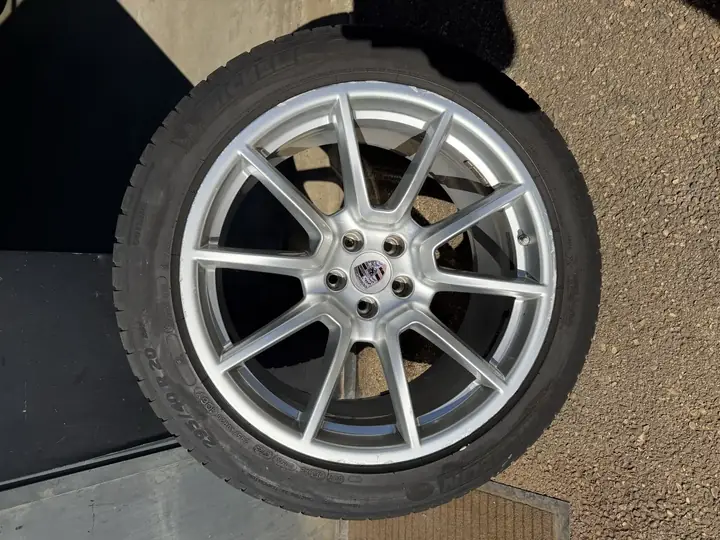
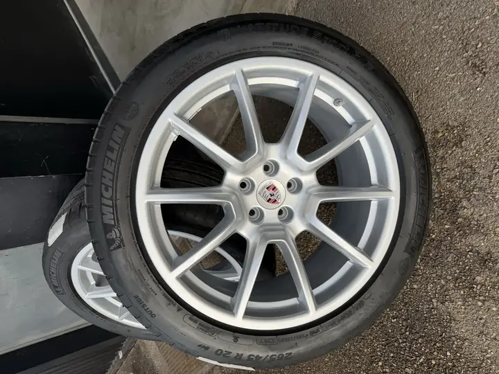

Le Macan roule sur de grandes jantes de 20 pouces : de belles pièces, mais exposées. La lèvre extérieure frotte les bordures, la finition argent se ternit et se marque avec le temps. Sur un véhicule de ce niveau, des jantes fatiguées se voient immédiatement.
L'état avant intervention
Ces jantes de Macan avaient conservé leur forme et leur structure, mais leur finition argent d'origine montrait des marques d'usage : bords marqués, aspect moins net qu'à la livraison. Aucune déformation, aucune fissure : un cas typique de remise à niveau esthétique.

La rénovation réalisée
Le procédé suit notre rénovation complète : décapage, traitement de surface, reprise de la finition argent d'origine, puis vernis bi-composant résistant aux UV. L'objectif, sur une Porsche, est de rester fidèle à la teinte constructeur plutôt que d'« inventer » un aspect : la jante doit paraître sortie d'usine. Pour une teinte précise, nous pouvons analyser la couleur existante au spectrophotomètre.
Le résultat
La jante retrouve une finition argent uniforme et lumineuse, avec des bords nets. Le blason Porsche au centre reste intact. La rénovation d'une jante de ce type commence à 130 € HT, loin du prix d'une jante neuve constructeur.

Vous avez une Porsche ? Voir notre page rénovation de jantes Porsche et notre guide jantes Porsche à Lyon. Pour un devis, envoyez-nous deux photos : réponse sous 24 h.
Questions fréquentes
Peut-on rénover des jantes Porsche Macan sans changer leur aspect d'origine ?
Oui. La rénovation vise à retrouver la finition constructeur : même teinte, même aspect. Nous pouvons analyser la couleur existante au spectrophotomètre pour rester fidèles à l'origine.
Combien coûte la rénovation d'une jante de Porsche Macan à Lyon ?
À partir de 130 € HT par jante. Le prix exact dépend de l'état, du modèle de jante et de la finition. Devis gratuit sous 24 h sur photos.
Faut-il démonter les jantes du véhicule ?
Oui, pour une rénovation complète les jantes sont démontées. Nous gérons le démontage et le remontage, pneus compris.